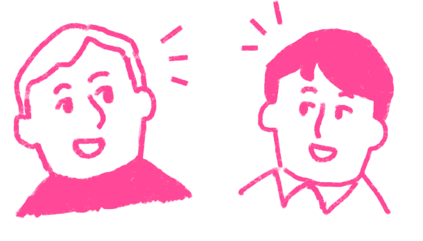
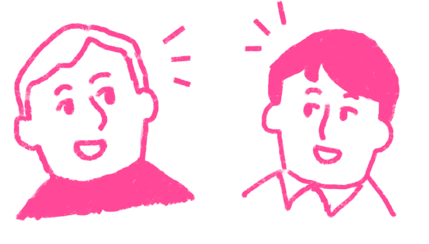
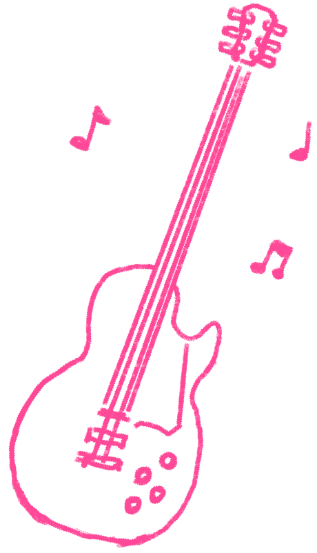
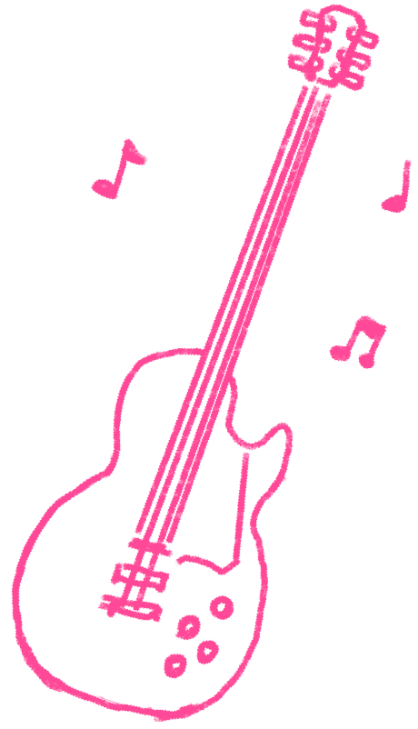
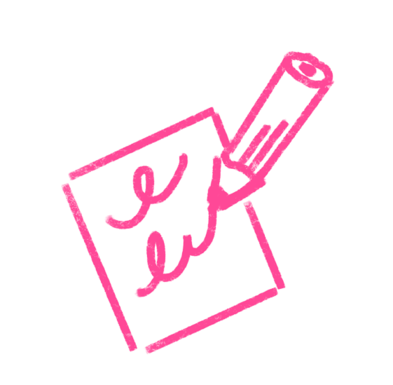
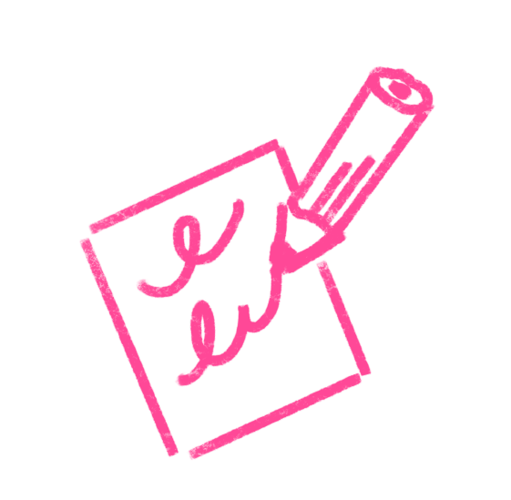
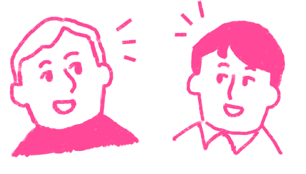
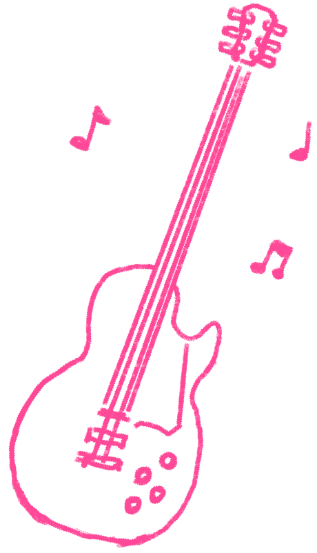
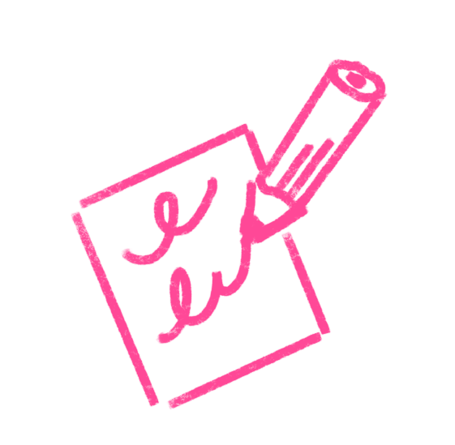

カリキュラム
 

 

 

English
日本語
CAMP GAKKOは学びと交流のコミュニティスクール。沖縄市に住む人々と、基地で暮らす人々、県外に住む人をつなぐことを目的としたプロジェクトです。
英語が学べるカリキュラムでちょっとした留学気分を味わったり、沖縄市の音楽文化に触れたり、イベントを通して基地に人たちと国際交流をしてみたり・・・
沖縄市に関わるみんなが楽しめる学びと交流の基地になれるよう、CAMP GAKKOは地域に寄り添った運営を目指します。




毎年恒例嘉手納基地内でのハロウィンのイベント『Trick or Treat』。その日は基地内への一般開校し、アメリカの伝統や風習を機会を通して“日本人とアメリカ人が一緒に参加でき“英語の文化に触れることができ身近に楽しいめるイベントです。
沖縄とアメリカ軍と海上自衛隊『3つの絆をつなぐ米軍基地イベント』ホワイトビーチフェスティバル。普段は決して見ることのできない米軍のヘリコプターや軍用車両に艦船を身近に楽しめ又、地域にいる人たちと米軍、そして自衛隊の交流と絆を深めるイベントです。